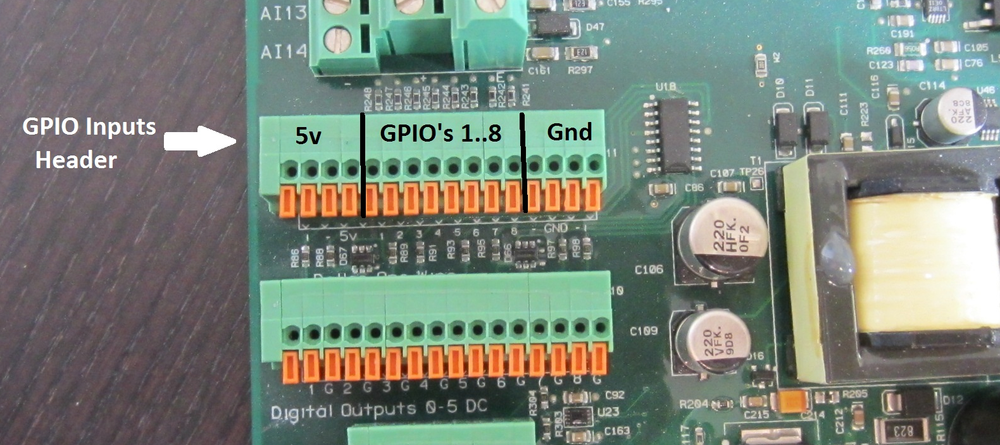
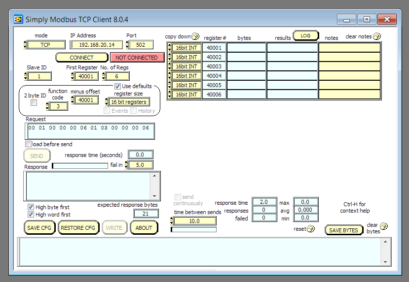

IceBear Control Using PLC

Quick Summary: An off-the-shelf external controller may be used to interface directly with the CDC controller to control the IceBears’ cycle of Making Ice and Providing Cooling. An example scenario will be shown using a PLC-type controller with a Modbus interface that is used to control an IceBear AND ALSO extract data from it.
CDC Controller GPIO Inputs:

The CDC controller has 8 GPIO inputs as shown in the above picture:
- 4 pins are dedicated to 5v
- GPIO inputs 1 thru 8
- 4 pins are dedicated to Ground
Pin #3 of GPIO inputs is dedicated to the Make Ice function. If pin 3 is
jumpered to 5v, the unit will go into Make-Ice mode.
Placing a jumper in like this is a common way for Ice-Energy technicians to
put the Bear into Make-Ice mode WITHOUT HAVING TO ACCESS THE HOME PAGE.
If the jumper were placed into Pin 4 the Melt functionality would be invoked,
the refrigerant pump would spin up, and the IceBear would start providing
cooling.
Motivation and Method
There are some 3rd parties out there that would prefer to use their own protocols for controlling an IceBear, but it’s very difficult to add those protocols directly to the CDC firmware base.
The reason is due to an 8-bit PIC being used as the Network Interface Controller
A solution is an external piece of hardware that can run the necessary Software protocols and Interface directly to the hardware of the CDC controller for Control and Status.
The method for Control and Status is hinted at with the pictures of the GPIO
input header shown above. An external piece of Hardware, with proper wiring and
control logic, can control the 5v signals going into the Make/Melt GPIOs.
This is the basic idea behind having an external controller running an
IceBear.
AutomationDirect PLC’s
These units are rackable! They’re HW compatible with the CDC Controller, sport a Modbus interface over TCP/IP, and they’re fairly easy to understand and wire up.
Automation Direct has a nice website for configuring modules together in a package. Here’s a photo of the units necessary for interfacing with a CDC controller:

Some highlights of these modules:
- 24v Power Supply
- CPU has an ethernet, which enables
Modbus Over Ethernet - A/D input. Allows transfer of floating point values coming from DAC channel on CDC
- Relay Module Output: to control Make/Melt via GPIO inputs
- Input Module: to detect Charge Status and Fault Status on the controller
Detailed Wiring Diagram
Modbus Registers
With wiring complete, Control and Status is achieved by reading and writing Modbus registers.
Modbus appears to the programmer as a large shareable register bank. The ‘Host’ is the Modbus Client and it can Read and Write Modbus registers. The CPU module of the PLC can Read and Write those same registers.
The following is a summation of Modbus registers used in the PLC as wired in the diagram above.
DS1 = register 40001 (Host Write / PLC Read)
If DS1 == 1 Then
ForceMake = ON // relay output module (N01)
Else
ForceMake = OFF
DS2 = register 40002 (Host Write / PLC Read)
If DS2 == 1 Then
ForceMelt = ON // relay output module (N02)
Else
ForceMelt = OFF
DS3 = register 40003 (Host Write / PLC Read)
If DS3 == 1 Then
SystemOff = ON // relay output module (N03)
Else
SystemOff = OFF
DS4 = register 40004 (Host Write / PLC Read)
If DS4 == 1 Then
Bypass = ON // relay output module (N04)
Else
Bypass = OFF
DS5 = register 40005 (PLC Write / Host Read)
If ChargeStatus_Input == ON Then // DC Input Module (1)
DS5 = 1
Else
DS5 = 0
DS6 = register 40006 (PLC Write / Host Read)
If FaultStatus_Input == ON Then // DC Input Module (2)
DS6 = 1
Else
DS6 = 0
DS11 = register 40011 (PLC Write / Host Read)
SystemCapacity = DS11 / 10 // Analog Voltage Input (CH1)
This means that the Host reads DS11 and then divides by 10 to get the SystemCapacity.
DS13 = register 40013 (PLC Write / Host Read)
UnitActivePowerFlow = DS13 / 10 // Analog Voltage Input (CH2)
This means that the Host reads DS13 and then divides by 10 to get the ActivePowerFlow.
Modbus Client, Windows
I’ve had success in using the Windows Modbus Client from here:
http://www.simplymodbus.ca/TCPclient.htm
This is a GUI client, and it’s very untuitive to use. I could successfully read and write registers of the Click PLC. I used this client to verify all the functionality described above.
Here’s a screenshot of the client:

Modbus Client, Linux
The windows client is great for manual control of the Modbus registers.
This is the typical process:
- 2 button clicks to write a value
- 1 click to read a value
What you lose with a GUI typically though is the ability to automate and log stuff.
The SimplyModbus GUI cannot read a register every X seconds AND log to file
Enter the Modbus Client, Linux!!
Under Ubuntu Linux there’s a Modbus library that’s installable through the synaptic package manager.
This all originates from libmodbus.org.
And the documentation can be found at libmodbus.org/documentation.
Coding using the library is very straightforward, and the documentation was very helpful. Here’s a little code snippet:
#include <stdio.h>
#include <modbus/modbus.h>
#include <modbus/modbus-tcp.h>
#include <modbus/modbus-version.h>
void main( void )
{
modbus_t *mb;
uint16_t tab_reg[32];
int rc,i;
mb = modbus_new_tcp("192.168.20.14", 502);
if( mb == NULL )
{
fprintf(stderr, "fail on modbus_new_tcp\n");
return;
}
if( modbus_connect(mb) == -1 )
{
...
...
...
Here’s link to full source code: xmodbus.c